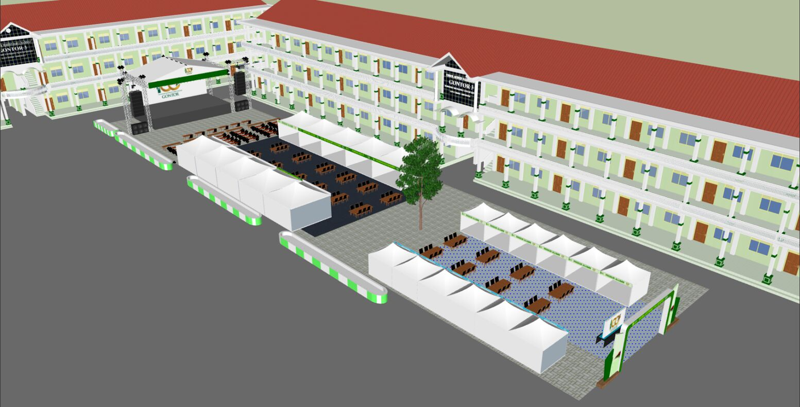
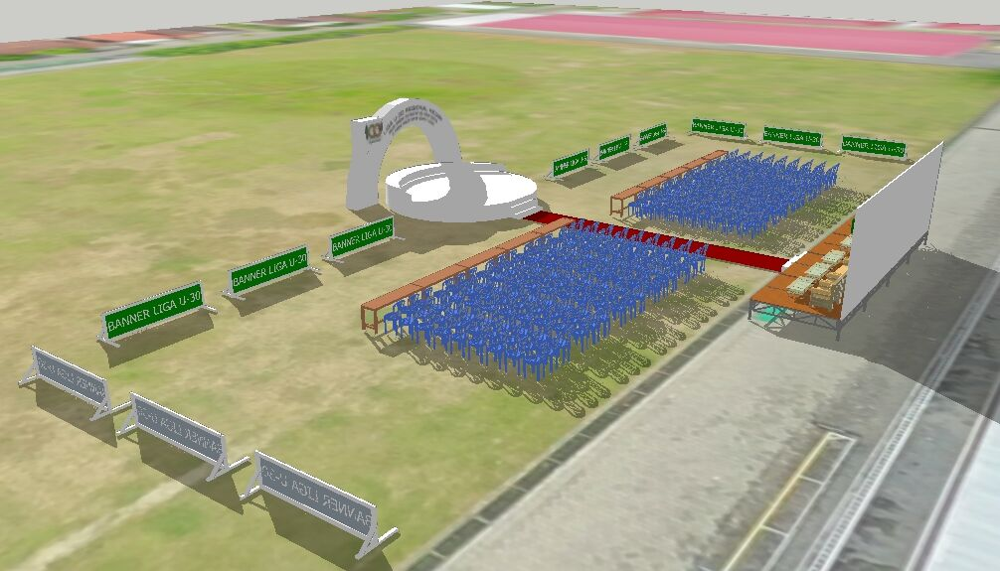
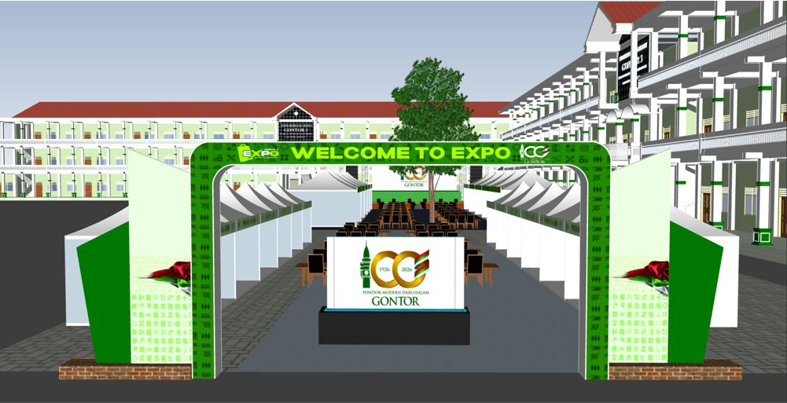

F-01 · 2025 · Event Planning
Masterplan Sarana Peringatan 100 Tahun Gontor
Enam acara besar dalam tiga minggu, dengan lima vendor dan kebutuhan sarana yang berbeda-beda. Saya memodelkan setiap venue dalam 3D, mulai dari panggung, terop, rigging, area VIP, sampai barikade, lalu merangkum kebutuhan dan penawaran vendor ke satu dokumen masterplan. Dengan dokumen itu, pimpinan bisa melihat dan menyetujui acara sebelum satu tiang pun didirikan.
6rangkaian acara
5vendor
485 mbarikade direncanakan